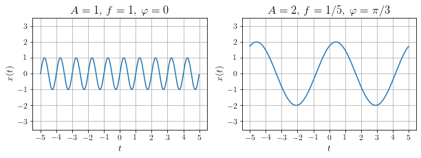
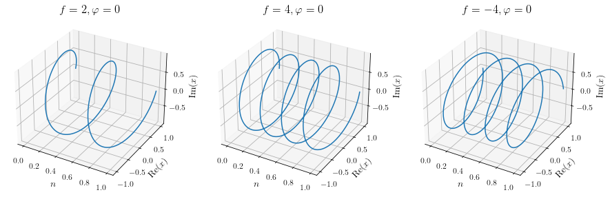
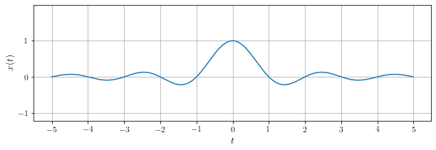
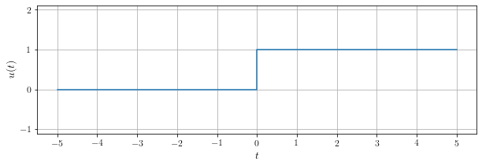
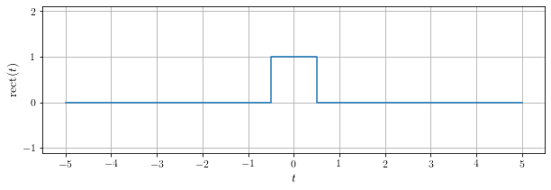

Signaux élémentaires¶
import numpy as np
from matplotlib.pyplot import figure, subplots, plot, xlabel, ylabel, xlim, ylim, title, savefig, show, rcParams
import matplotlib as mpl
from mpl_toolkits.mplot3d import Axes3D
mpl.style.use('../signal.mplstyle')
# Sinusoïde
t = np.arange(-5, 5, 0.01)
a1, f1, phi1 = 1, 1, 0
a2, f2, phi2 = 2, .2, np.pi/3
x1 = a1 * np.sin(2*np.pi*f1*t + phi1)
x2 = a2 * np.sin(2*np.pi*f2*t + phi2)
fig, (ax1, ax2) = subplots(1,2, figsize=(10,3))
ax1.plot(t,x1)
ax1.set_xlabel("$t$")
ax1.set_ylabel("$x(t)$")
ax1.set_title("$A = 1$, $f = 1$, $\\varphi = 0$")
ax1.set_ylim([-2.1, 2.1])
ax1.set_xticks(range(-5,6))
ax1.set_yticks(range(-5,6))
ax1.axis('equal')
ax2.plot(t,x2)
ax2.set_xlabel("$t$")
ax2.set_ylabel("$x(t)$")
ax2.set_title("$A = 2$, $f = 1/5$, $\\varphi = \pi/3$")
ax2.set_ylim([-2.1, 2.1])
ax2.set_xticks(range(-5,6))
ax2.set_yticks(range(-5,6))
ax2.axis('equal')
savefig(f"sinusoide.svg")
show()

n = np.arange(0, 1, 0.002)
params = [[2, 0], [4, 0], [-4, 0]]
fig = figure(figsize=(15,8))
i = 0
for f, phi in params:
i+=1
ax = fig.add_subplot(1,3,i, projection='3d')
x = np.exp(1j*2*np.pi*f*n + phi)
ax.plot(n, np.real(x), np.imag(x))
ax.set_xlabel("$n$")
ax.set_ylabel("$\mathrm{Re}(x)$")
ax.set_zlabel("$\mathrm{Im}(x)$")
ax.set_title(f"$f = {f}, \\varphi = {phi}$")
savefig(f"expo.svg")
show()

# Sinus cardinal
t = np.arange(-5, 5, 0.01)
x = np.sinc(t)
fig, ax = subplots(1,1, figsize=(10,3))
ax.plot(t,x)
ax.set_xlabel("$t$")
ax.set_ylabel("$x(t)$")
ax.set_xticks(range(-5,6))
ax.set_yticks(range(-5,6))
ax.axis('equal')
savefig(f"sinc.svg")
show()

# Échelon
t = [-5, 0, 0, 5]
x = [0, 0, 1, 1]
fig, ax = subplots(1,1, figsize=(10,3))
ax.plot(t,x)
ax.set_xlabel("$t$")
ax.set_ylabel("$u(t)$")
ax.set_xticks(range(-5,6))
ax.set_yticks(range(-5,6))
ax.axis('equal')
savefig(f"echelon.svg")
show()

# Porte
t = [-5, -.5, -.5, .5, .5, 5]
x = [0, 0, 1, 1, 0, 0]
fig, ax = subplots(1,1, figsize=(10,3))
ax.plot(t,x)
ax.set_xlabel("$t$")
ax.set_ylabel("$\mathrm{rect}(t)$")
ax.set_xticks(range(-5,6))
ax.set_yticks(range(-5,6))
ax.axis('equal')
savefig(f"porte.svg")
show()

# Impulsion de Dirac
x = .1#.2
y = .9#.95
n = [-5, 0, 0, -x, 0, x, 0, 0, 5]
d = [ 0, 0, 1, y, 1, y, 1, 0, 0]
fig, ax = subplots(1,1, figsize=(10,3))
ax.plot(n,d)
ax.set_xlabel("$t$")
ax.set_ylabel("$\delta(t)$")
ax.set_xticks(range(-5,6))
ax.set_yticks(range(-5,6))
ax.axis('equal')
savefig(f"dirac.svg")
show()

# Flèche
x = .1
y = .9
arrow_x = np.array([0, 0, -x, 0, x, 0, 0])
arrow_y = np.array([0, 1, y, 1, y, 1, 0])
# Couleur
prop_cycle = rcParams['axes.prop_cycle']
colors = prop_cycle.by_key()['color']
clr = colors[0]
# Affichage
fig, ax = subplots(1,1, figsize=(10,3))
ax.plot([-5, 5], [0, 0])
T = 2
for i in range(-4, 6, T):
ax.plot(arrow_x+i, arrow_y, color=clr)
ax.set_xlabel("$t$")
# ax.set_ylabel("$\cha(t)")
ax.set_title(f"Peigne de période {T}")
ax.set_xticks(range(-5,6))
ax.set_yticks(range(-5,6))
ax.axis('equal')
savefig(f"peigne.svg")
show()